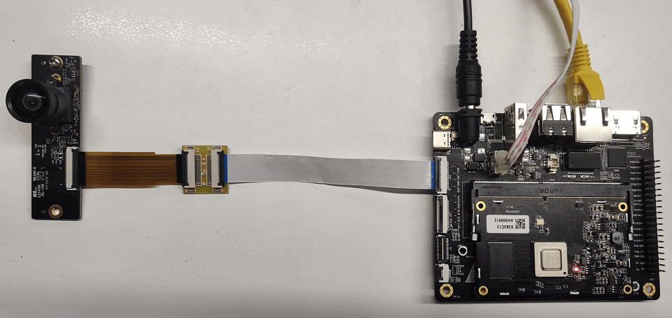

3.1.1. 智能IPC
基于地平线旭日X3M系列边缘AI芯片，搭配完善的系统软件，结合领先的深度学习算法以及工具链，可以快速高效的搭建不同应用场景的智能分析IPC解决方案。这里介绍几种基本的IPC应用场景，我们使用X3M芯片图像处理模块(VIN、ISP、VPS、VO)、多媒体模块(VENC、VDEC)、BPU模块的HAPI接口功能，搭配mobilenet_v2、yolov5、personMultitask(地平线自研人体多任务模型，支持人脸、人头、人体、人体骨骼点检测)，向用户展示如何快使用地平线X3 SDB开发板搭建智能IPC应用。
3.1.1.1. 硬件环境准备
使用地平线X3 SDB开发板搭建智能IPC，需要准备如下硬件：
X3 SDB开发板；摄像头模组，800W: IMX415, 200W: F37;
12V电源适配器；
串口线；
网线(为保证编码推流时的稳定性，建议开发板与PC机的千兆网口进行直连)；
整体连接方式如下图所示：
3.1.1.2. 软件部署
根据第二章快速入门章节烧录好配套的系统镜像后，将发布包中sample目录下已经编译好的部署包sunrise_camera.tar.gz，通过winscp等工具将部署包拷贝到开发板/app目录下并解压，解压后的目录结构说明如下：
.
├── start_app.sh # 启动脚本，按顺序启动web服务、主程序
├── sunrise_camera
│ ├── bin # 主程序和sensor库
│ ├── include # 通用头文件（备用）
│ ├── lib # 编译生成的静态库和 bpu predict动态库
│ ├── model_zoom # 应用中用到的算法模型
│ └── test_data # 应用默认配置文件和测试文件
└── WebServer
├── fcgi # fcgi程序（备用）
├── lighttpd-x3 # httpd和web页面
├── pcre # lighttpd依赖
├── README.txt # fcgi、lighttpd、pcre编译部署说明
└── start_lighttpd.sh # web服务启动脚本
3.1.1.3. 单路，200W@30fps接入
硬件连接方式
摄像头模组使用F37，连接X3 SDB开发板MIPI CSI接口12。
软件启动方式
在/app目录下执行sh ./start_app.sh，待程序启动后，通过chrome浏览器在地址栏输入开发板IP地址可以登录UI界面， 例如：http://192.168.1.10
登录成功后的界面显示如下：
单路200W IPC场景按照如下配置选择后，点击 提交 按钮：
配置提交成功后，即可通过浏览器查看算法渲染后的图像：
通过配置界面的设备信息可以看到rtsp码流链接，可以通过vlc拉流预览：
vlc拉流预览效果：
3.1.1.4. 单路，800W@30fps接入
硬件连接方式
摄像头模组使用IMX415，连接X3 SDB开发板MIPI CSI接口13。

软件启动方式
在/app目录下执行sh ./start_app.sh，待程序启动后，通过chrome浏览器在地址栏输入开发板IP地址可以登录UI界面， 例如：http://192.168.1.10。
单路800W IPC场景按照如下配置选择后，点击 提交 按钮：
配置提交成功后，即可通过浏览器查看算法渲染后的图像：
同样可以参考1080P场景使用vlc拉流预览。
3.1.1.5. 双路 800W@30fps + 200W@30fps接入
硬件连接方式
摄像头模组使用IMX415和F37，IMX415连接X3 SDB开发板MIPI CSI13接口，F37连接X3 SDB开发板MIPI CSI 12接口。
软件启动方式
在/app目录下执行sh ./start_app.sh，待程序启动后，通过chrome浏览器在地址栏输入开发板IP地址可以登录UI界面， 例如：http://192.168.1.10。
双路IPC场景按照如下配置选择后，点击 提交 按钮：
可以通过浏览器界面的主码流，子码流切换不同摄像头预览画面
通过配置界面的设备信息可以看到rtsp码流链接，使用vlc拉取不同码流预览